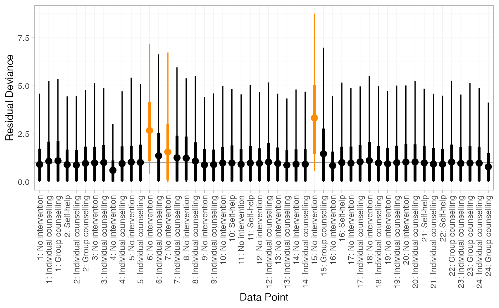
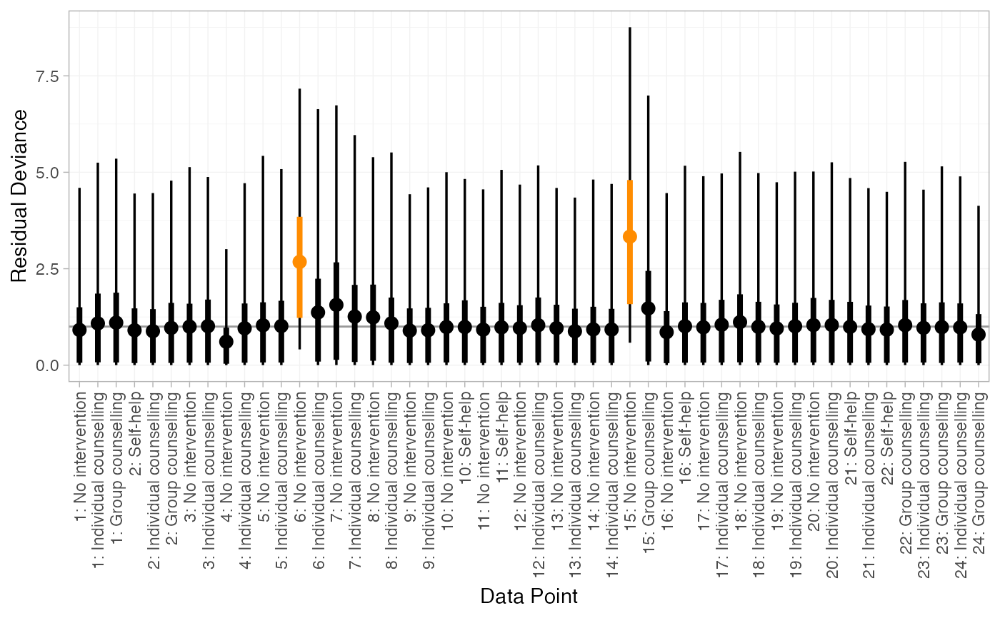
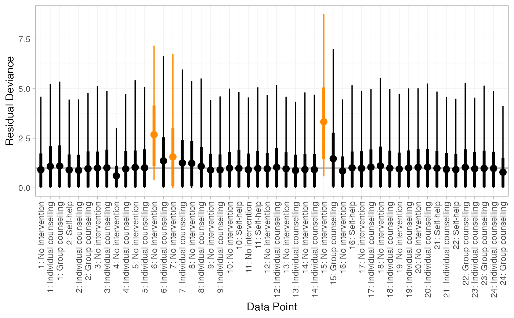
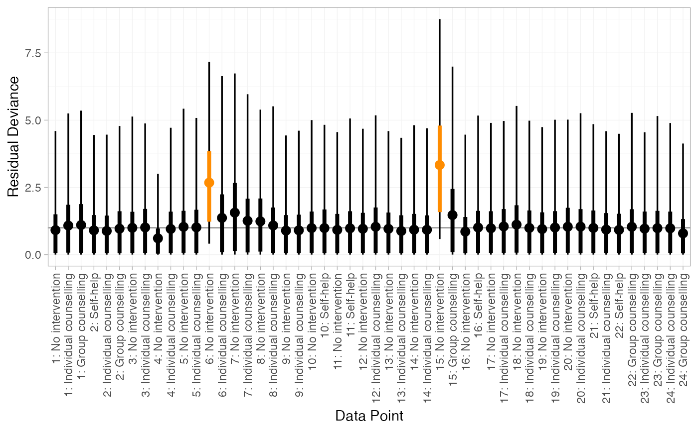
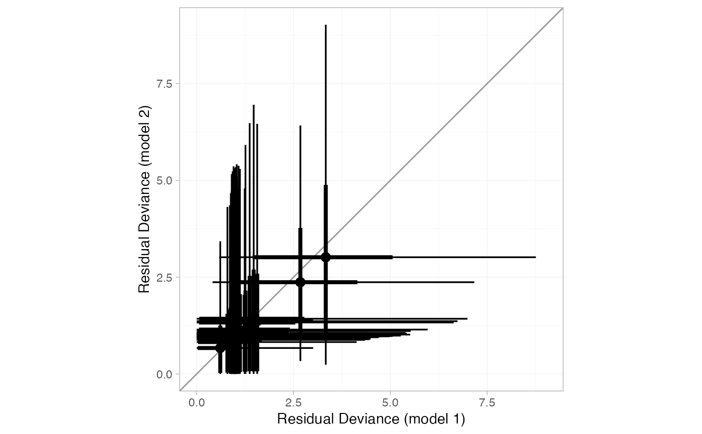
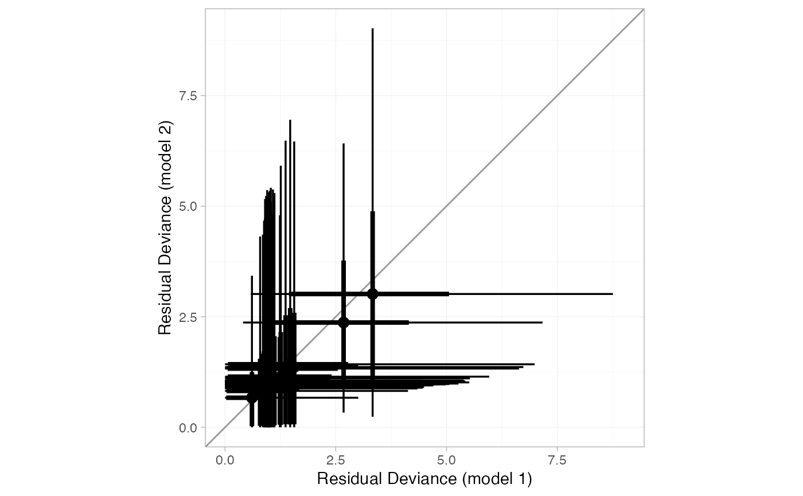

The plot() method for nma_dic objects produced by dic() produces
several useful diagnostic plots for checking model fit and model comparison.
Further detail on these plots and their interpretation is given by
Dias et al. (2011)
.
Arguments
- x
A
nma_dicobject- y
(Optional) A second
nma_dicobject, to produce "dev-dev" plots for model comparison.- ...
Additional arguments passed on to other methods
- show_uncertainty
Logical, show uncertainty with a
ggdistplot stat? DefaultTRUE.- stat
Character string specifying the
ggdistplot stat to use ifshow_uncertainty = TRUE, default"pointinterval". Ifyis provided, currently only"pointinterval"is supported.- orientation
Whether the
ggdistgeom is drawn horizontally ("horizontal") or vertically ("vertical"). Only used for residual deviance plots, default"vertical".
Details
When a single nma_dic object is given, a plot of the residual
deviance contribution for each data point is produced. For a good fitting
model, each data point is expected to have a residual deviance of 1; larger
values indicate data points that are fit poorly by the model.
When two nma_dic objects are given, a "dev-dev" plot comparing the
residual deviance contributions under each model is produced. Data points
with residual deviance contributions lying on the line of equality are fit
equally well under either model. Data points lying below the line of
equality indicate better fit under the second model (y); conversely, data
points lying above the line of equality indicate better fit under the first
model (x). A common use case is to compare a standard consistency model
(fitted using nma() with consistency = "consistency") with an unrelated
mean effects (UME) inconsistency model (fitted using nma() with
consistency = "ume"), to check for potential inconsistency.
See Dias et al. (2011) for further details.
References
Dias S, Welton NJ, Sutton AJ, Ades AE (2011). “NICE DSU Technical Support Document 2: A generalised linear modelling framework for pair-wise and network meta-analysis of randomised controlled trials.” National Institute for Health and Care Excellence. https://www.sheffield.ac.uk/nice-dsu.
Examples
## Smoking cessation
# \donttest{
# Run smoking FE NMA example if not already available
if (!exists("smk_fit_FE")) example("example_smk_fe", run.donttest = TRUE)
# }
# \donttest{
# Run smoking RE NMA example if not already available
if (!exists("smk_fit_RE")) example("example_smk_re", run.donttest = TRUE)
# }
# \donttest{
# Compare DIC of FE and RE models
(smk_dic_FE <- dic(smk_fit_FE))
#> Residual deviance: 267.2 (on 50 data points)
#> pD: 27.1
#> DIC: 294.2
(smk_dic_RE <- dic(smk_fit_RE)) # substantially better fit
#> Residual deviance: 53.8 (on 50 data points)
#> pD: 43.7
#> DIC: 97.5
# Plot residual deviance contributions under RE model
plot(smk_dic_RE)
 # Further customisation is possible using ggplot commands
# For example, highlighting data points with residual deviance above a certain threshold
plot(smk_dic_RE) +
ggplot2::aes(colour = ggplot2::after_stat(ifelse(y > 1.5, "darkorange", "black"))) +
ggplot2::scale_colour_identity()

# Or by posterior probability, for example here a central probability of 0.6
# corresponds to a lower tail probability of (1 - 0.6)/2 = 0.2
plot(smk_dic_RE, .width = c(0.6, 0.95)) +
ggplot2::aes(colour = ggplot2::after_stat(ifelse(ymin > 1, "darkorange", "black"))) +
ggplot2::scale_colour_identity()

# Check for inconsistency using UME model
# }
# \donttest{
# Run smoking UME NMA example if not already available
if (!exists("smk_fit_RE_UME")) example("example_smk_ume", run.donttest = TRUE)
# }
# \donttest{
# Compare DIC
smk_dic_RE
#> Residual deviance: 53.8 (on 50 data points)
#> pD: 43.7
#> DIC: 97.5
(smk_dic_RE_UME <- dic(smk_fit_RE_UME)) # no difference in fit
#> Residual deviance: 53.6 (on 50 data points)
#> pD: 44.8
#> DIC: 98.4
# Compare residual deviance contributions with a "dev-dev" plot
plot(smk_dic_RE, smk_dic_RE_UME)
# Further customisation is possible using ggplot commands
# For example, highlighting data points with residual deviance above a certain threshold
plot(smk_dic_RE) +
ggplot2::aes(colour = ggplot2::after_stat(ifelse(y > 1.5, "darkorange", "black"))) +
ggplot2::scale_colour_identity()

# Or by posterior probability, for example here a central probability of 0.6
# corresponds to a lower tail probability of (1 - 0.6)/2 = 0.2
plot(smk_dic_RE, .width = c(0.6, 0.95)) +
ggplot2::aes(colour = ggplot2::after_stat(ifelse(ymin > 1, "darkorange", "black"))) +
ggplot2::scale_colour_identity()

# Check for inconsistency using UME model
# }
# \donttest{
# Run smoking UME NMA example if not already available
if (!exists("smk_fit_RE_UME")) example("example_smk_ume", run.donttest = TRUE)
# }
# \donttest{
# Compare DIC
smk_dic_RE
#> Residual deviance: 53.8 (on 50 data points)
#> pD: 43.7
#> DIC: 97.5
(smk_dic_RE_UME <- dic(smk_fit_RE_UME)) # no difference in fit
#> Residual deviance: 53.6 (on 50 data points)
#> pD: 44.8
#> DIC: 98.4
# Compare residual deviance contributions with a "dev-dev" plot
plot(smk_dic_RE, smk_dic_RE_UME)
 # By default the dev-dev plot can be a little cluttered
# Hiding the credible intervals
plot(smk_dic_RE, smk_dic_RE_UME, show_uncertainty = FALSE)

# Changing transparency
plot(smk_dic_RE, smk_dic_RE_UME, point_alpha = 0.5, interval_alpha = 0.1)
# By default the dev-dev plot can be a little cluttered
# Hiding the credible intervals
plot(smk_dic_RE, smk_dic_RE_UME, show_uncertainty = FALSE)

# Changing transparency
plot(smk_dic_RE, smk_dic_RE_UME, point_alpha = 0.5, interval_alpha = 0.1)
 # }
# }